Ember Studio היא תוכנה חינמית בקוד פתוח ליצירת משחק פוקימון משלכם. מתחילים מעותק של Pokémon FireRed (US) v1.1, ומשנים כל מה שרוצים: המפות והדמויות שבהן, העלילה, הפוקימונים, המאמנים, החפצים, הטקסט, הגרפיקה והמוזיקה. התוצאה היא משחק GBA חדש, שאפשר לשחק בו בכל אמולטור או במחסנית.
לא צריך לדעת לתכנת, לערוך בהקסה או לכתוב אסמבלי. הכול נעשה בטפסים, בצייר מפות ובבלוקים: כרטיסים צבעוניים שמסדרים אחד מתחת לשני כדי לקבוע מה קורה במשחק ("להגיד את זה", "לתת שיקוי", "ללכת שלושה צעדים שמאלה").
טיפ: התמונות במדריך לקוחות ממשחק הדוגמה הרפתקת הגחלת, שנוצר עם האשף. המסכים שלכם ייראו אותו דבר, עם השמות והפוקימונים שלכם.
Ember Studio לא כוללת אף משחק של נינטנדו. צריך עותק משלכם של Pokémon FireRed (US) גרסה 1.1, כקובץ .gba. הקובץ המקורי אף פעם לא משתנה: הפרויקט שומר רק את השינויים שלכם. כך אפשר לשתף פרויקט, או טלאי (patch) שנוצר ממנו, בלי לשתף את המשחק עצמו.
Ember Studio היא קובץ אחד, EmberStudio.exe, ואין מה להתקין. מורידים אותו מדף ה-Releases של הפרויקט ב-GitHub ושמים בכל תיקייה, למשל Documents\Ember Studio. לחיצה כפולה מפעילה אותו.
בהפעלה הראשונה, SmartScreen של Windows עשוי להציג חלון כחול שאומר שהיישום לא מוכר. זה קורה לתוכנות חדשות של פרויקטים קטנים בקוד פתוח, ולא בגלל שמשהו לא בסדר.
קובץ ה-EXE חתום, ואפשר לראות את התעודה ב-מאפיינים ← חתימות דיגיטליות. Windows סומכת על חתימה חדשה רק אחרי שהרבה אנשים הורידו את התוכנה. אם מעדיפים, אפשר גם לבנות את ה-EXE בעצמכם מקוד המקור (ראו פרויקטים ושיתוף).
%LOCALAPPDATA%\EmberStudio\mgba.%LOCALAPPDATA%\EmberStudio. הפרויקטים עצמם נשמרים איפה שתבחרו, בדרך כלל ב-Documents.הכפתור בפינה העליונה עובר בין עברית ל-English. כל הממשק מתחלף מיד, ובעברית הוא מסודר מימין לשמאל. לשפת הממשק אין קשר לשפת המשחק שלכם: אפשר ליצור משחק באנגלית עם ממשק בעברית, וגם להפך.
למפתחים, או למי שלא רוצה להריץ EXE:
python editor/ember/server.py # פותח את העורך בדפדפן בכתובת http://localhost:8765
python editor/ember/app.py # אותו חלון כמו ה-EXE (pip install pywebview pillow)
הדרך המהירה להתחיל היא האשף משחק חדש. הוא שואל כמה שאלות ויוצר פרויקט שלם שאפשר לשחק בו.
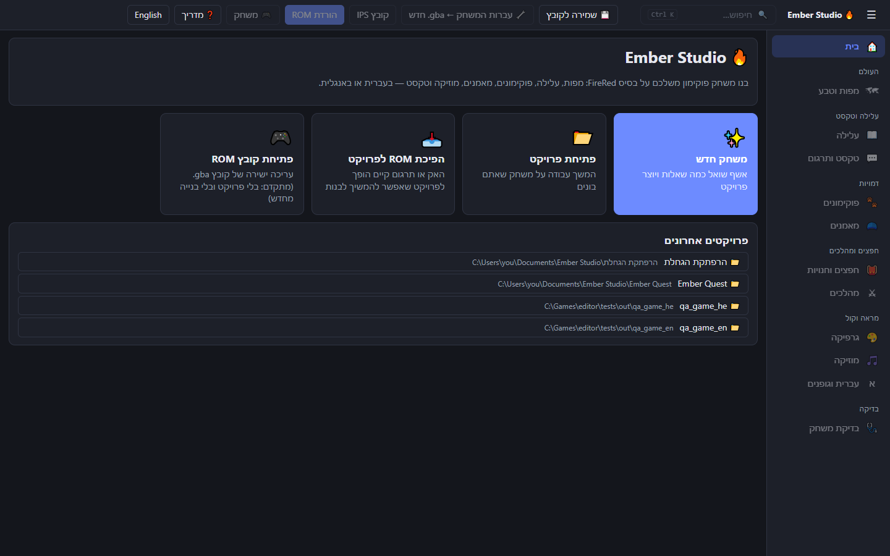
במסך הבית יש ארבע אפשרויות:
| כפתור | מה הוא עושה |
|---|---|
| ✨ משחק חדש | שואל כמה שאלות ויוצר פרויקט. מתחילים כאן. |
| 📂 פתיחת פרויקט | פותח תיקיית פרויקט שיצרתם קודם. |
| 📥 הפיכת ROM לפרויקט | לוקח האק או תרגום קיים (קובץ .gba) והופך אותו לפרויקט, כדי שתוכלו להמשיך לבנות אותו. |
| 🎮 פתיחת קובץ ROM | עריכה מהירה של קובץ .gba ישירות, בלי פרויקט ובלי בנייה. מתאים לתיקונים קטנים. |
מתחת לכפתורים מופיעים הפרויקטים האחרונים. לחיצה על אחד פותחת אותו.
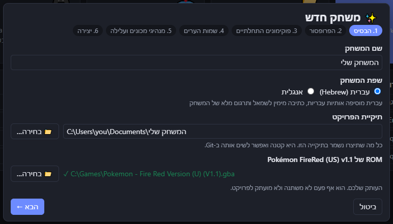
בוחרים את שם הפרופסור. כל השורות של הפרופסור מתעדכנות לשם החדש.
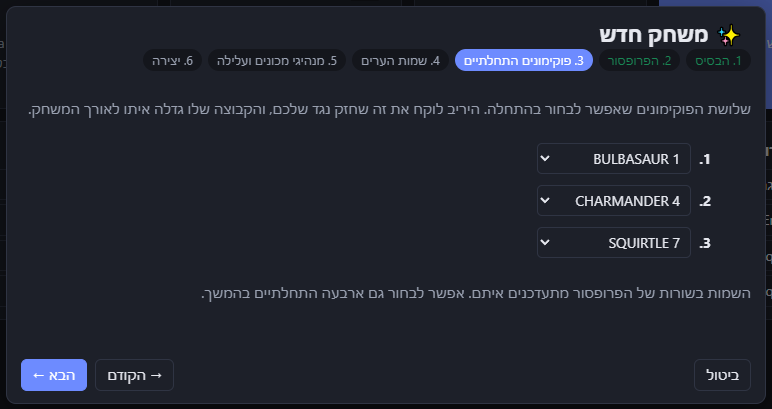
בוחרים את שלושת הפוקימונים שהשחקן יכול לבחור בהתחלה, מבין 386 הפוקימונים הראשונים. Ember Studio מעדכנת כל מה שתלוי בבחירה:
משנים את שמות הערים והכפרים. השמות החדשים מופיעים על השלטים, במפת העיר, בהודעת "הגעתם אל…" ובכל הדיאלוגים.
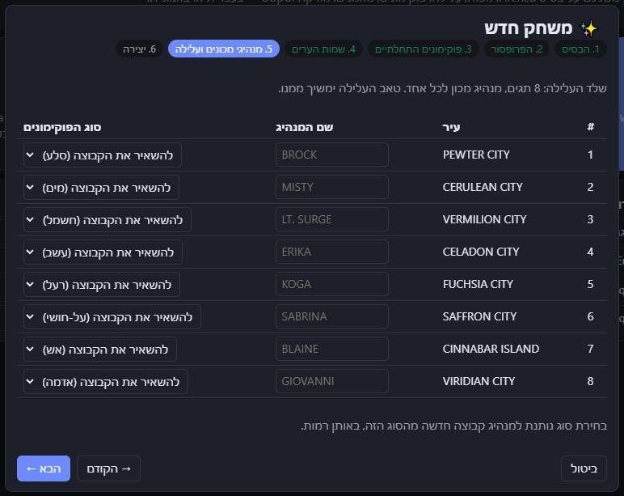
לכל אחד משמונת המכונים בוחרים את שם המנהיג ואת הסוג של הפוקימונים שלו. כל הקבוצה של המנהיג מתחלפת בפוקימונים מהסוג הזה, ברמות המתאימות.
האשף גם פותח את העלילה שלכם: פרק לכל תג, ובכל פרק צעד "לנצח את מנהיג המכון". את השאר ממלאים אחר כך בלשונית עלילה.
Ember Studio יוצרת את תיקיית הפרויקט ובונה את המשחק. אתם מגיעים לעורך כשהמשחק שלכם פתוח. לחיצה על 🎮 משחק (או על ▶ בנייה ומשחק) מאפשרת לנסות אותו מיד.
טיפ: כל תשובה באשף אפשר לשנות אחר כך בעורך, אז לא צריך לדאוג שהכול יהיה מושלם בפעם הראשונה.
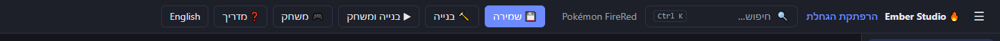
בחלק העליון של החלון יש:
בצד, סרגל הצד מחזיק את הלשוניות בקבוצות (העולם, עלילה וטקסט, דמויות, חפצים ומהלכים, מראה וקול, בדיקה). אפשר לקפל אותו לאייקונים בלבד, והוא זוכר איך השארתם אותו.
הלשוניות, אחת לכל חלק במשחק:
| לשונית | מה עורכים בה |
|---|---|
| בית | פתיחה, יצירה או ייבוא של פרויקט. |
| טקסט ותרגום | כל הטקסט במשחק. |
| עברית וגופנים | אותיות עבריות, הגופן והגדרות מימין לשמאל. |
| פוקימונים | נתונים, סוגים, מהלכים, התפתחויות, התחלתיים ופוקימוני מתנה. |
| מאמנים | כל מאמן ומנהיג מכון והקבוצות שלהם. |
| חפצים וחנויות | חפצים, מחירים, תיאורים ומה כל חנות מוכרת. |
| מהלכים | מהלכים, TM ו-HM, ומורי מהלכים. |
| מפות וטבע | עורך המפה, תצוגת העולם, פוקימונים בטבע, ובלוקים ואריחים. |
| 📖 עלילה | קו העלילה, צעד אחרי צעד. |
| גרפיקה | תמונות פוקימונים, דמויות מתמונה ומסך הכותרת. |
| מוזיקה | איזה שיר מתנגן איפה, וייבוא מוזיקה. |
| 🩺 בדיקת משחק | מחפשת בעיות בכל המשחק. |
out/game.gba.out/game.gba.בלשונית מפות וטבע יש שלוש תצוגות למעלה: עורך מפה, תצוגת עולם (כל המפות המחוברות יחד) ובלוקים ואריחים.
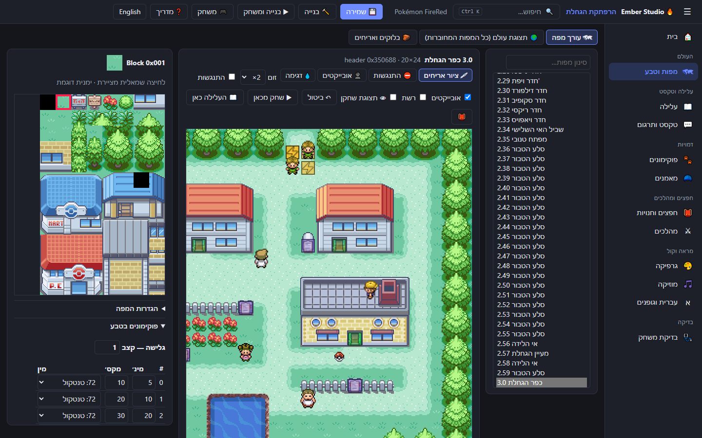
הרשימה בצד מציגה את כל המפות במשחק, לפי מספר ושם, למשל 3.0 כפר הגחלת. הקלדה בתיבה שמעל הרשימה מסננת אותה. המספרים הם קבוצה.מפה: קבוצה 3 היא הערים והדרכים בחוץ, ושאר הקבוצות הן בעיקר מבנים ומערות.
כמה קיצורים שימושיים:
תיבות הסימון התנגשות, אובייקטים ורשת מציגות או מסתירות את השכבות האלה מעל המפה.
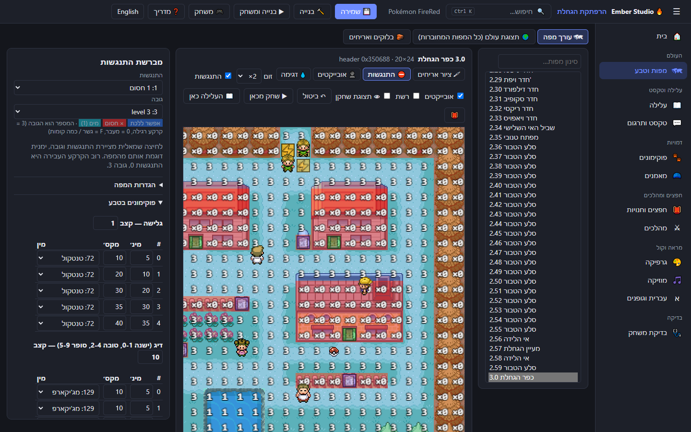
במצב ⛔ התנגשות כל משבצת מראה אם אפשר ללכת עליה:
בוחרים מכחול בחלונית מכחול התנגשות ומציירים על המפה. אם השחקן עובר דרך קירות או נתקע על רצפה ריקה, ההתנגשות לא נכונה. מתקנים אותה כאן.
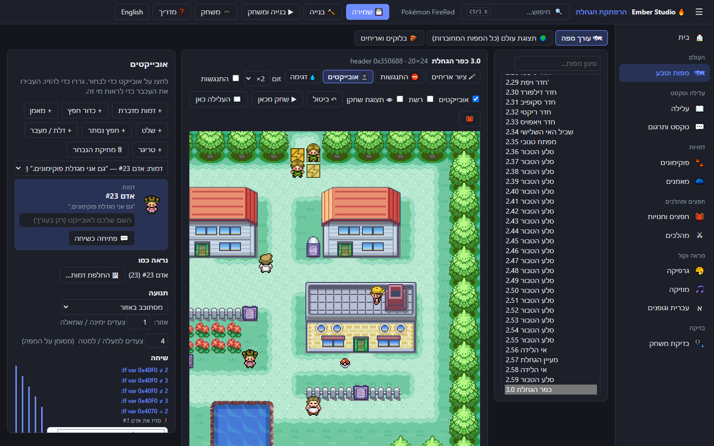
במצב 👤 אובייקטים רואים כל מה שעושה משהו במפה:
כמה פעולות שימושיות:
הפרק הבא מפרט את האובייקטים.
תחת הגדרות המפה בחלונית הצד אפשר לשנות את שם המפה (כפי שהוא מופיע במשחק), את המוזיקה שלה, את מזג האוויר ואת סוג המפה (עיר, דרך, מבנה, מערה…).
הכפתור ▶ שחק מכאן מאפשר לבדוק כל נקודה במשחק:
זו הדרך הכי מהירה לבדוק שינוי. את קבוצת הבדיקה משנים בכפתור 🎒.
תצוגת עולם מראה את כל המפות שמחוברות זו לזו, מסודרות כמו במשחק. כאן רואים את הצורה של האזור שלכם, מזיזים מפות זו ביחס לזו ומציירים מעבר לגבולות של מפות.
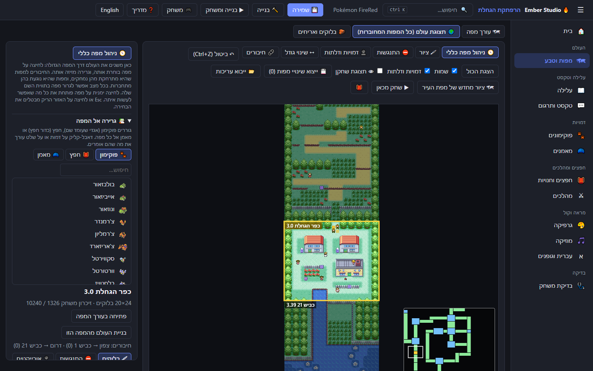
world_edits.json) וטוענים אותן לעותק אחר של המשחק.אם שתי מפות חופפות, או שהחיבורים שלהן לא מתאימים, מופיעה אזהרה מעל המפה. כדאי לתקן לפני ששולחים את המשחק.
במצבים 🧭 ניהול מפה כללי ו-👤 דמויות ודלתות, בחלונית הצד יש ספרייה 📚 גרירה אל המפה עם שלוש רשימות: פוקימונים, חפצים ומאמנים. גוררים אחד מהם אל כל מפה:
דאבל-קליק על דמות או על שלט (בתצוגת העולם או בעורך המפה) עורך את מה שהם אומרים ישירות על המפה, בבועת דיבור עם תצוגה מקדימה של חלון ההודעות. Ctrl+Enter שומר, Esc מבטל.
כשמזיזים מפה, אנימציה קצרה מראה מה השתנה: צלעות שהתחברו מאירות בירוק, וצלעות שהתנתקו מהבהבות באדום.
מסמנים 👁 תצוגת שחקן (בתצוגת העולם ובעורך המפה) כדי לראות סביב העכבר מסגרת בגודל מסך המשחק, 15×10 משבצות: בדיוק מה שהשחקן רואה כשהוא עומד שם. כל השאר מוחשך.
במצב 👤 דמויות ודלתות אפשר לעבור בדלת אל המפה שהיא מובילה אליה, ולחזור:
זה עובד כמו בעורך המפה:
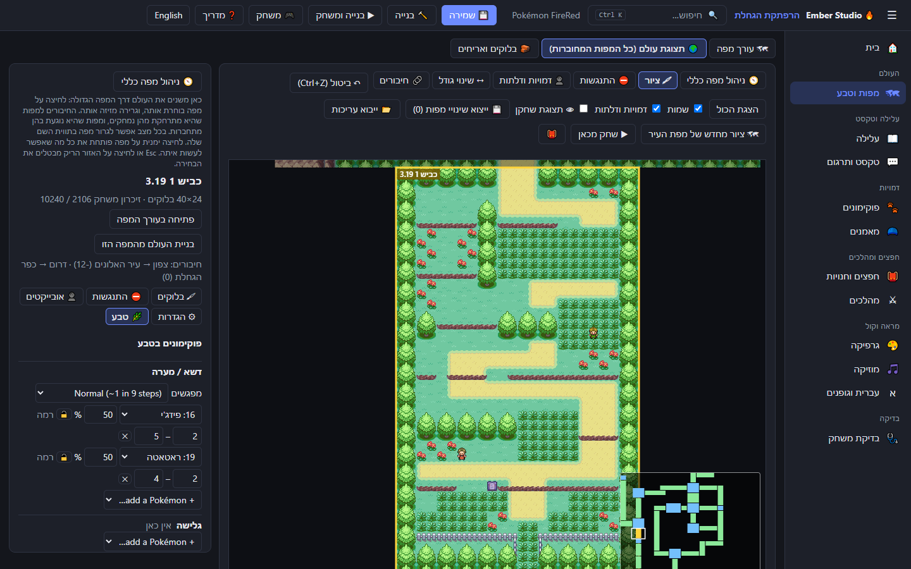
בוחרים מפה ופותחים בחלונית הצד את הלשונית 🌿 טבע. לכל סוג של מפגש (דשא / מערה, גלישה, דיג, ניפוץ סלעים) אפשר:
המשחק האמיתי בוחר מפגשים מתוך משבצות קבועות, ולכן הסיכויים שמוצגים מעוגלים לערכים האפשריים הקרובים (≈).
מפות בנויות מבלוקים של 16×16 פיקסלים. כל בלוק מורכב מארבעה אריחים של 8×8. הבלוקים של מפה מגיעים מהטיילסט שלה: טיילסט העיר, טיילסט המערה וכן הלאה.
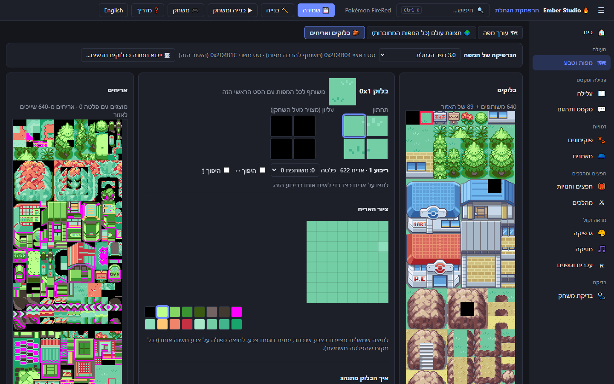
בבלוקים ואריחים אפשר:
זו הדרך הקלה להוסיף למפות משהו חדש, כמו פסל, דגל, בניין או שלט.
טיפ: תמונות עם מעט צבעים וקווי מתאר ברורים נראות הכי טוב. לכל טיילסט יש מספר מוגבל של צבעים, ו-Ember Studio בוחרת את הקרובים ביותר שיש לה.
לחיצה על אובייקט במצב 👤 אובייקטים פותחת את ההגדרות שלו.
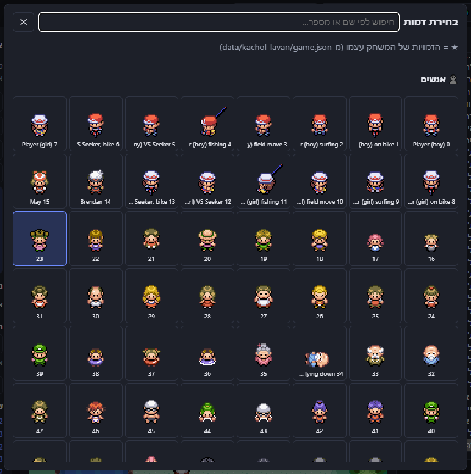
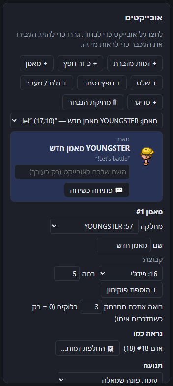
מאמן הוא דמות שנלחמת בשחקן כשהם נפגשים:
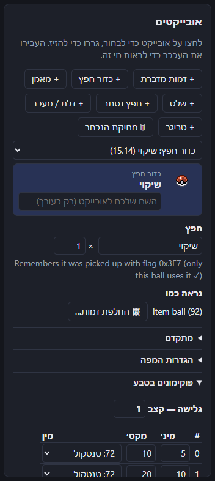
סקריפט הוא מה שקורה כשהשחקן מדבר עם מישהו, קורא שלט או עולה על טריגר. ב-Ember Studio כותבים סקריפטים בבלוקים. מסדרים אותם מלמעלה למטה, והמשחק מריץ אותם בסדר הזה.
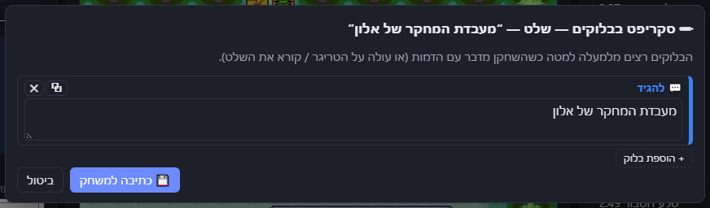
כדי לערוך סקריפט:
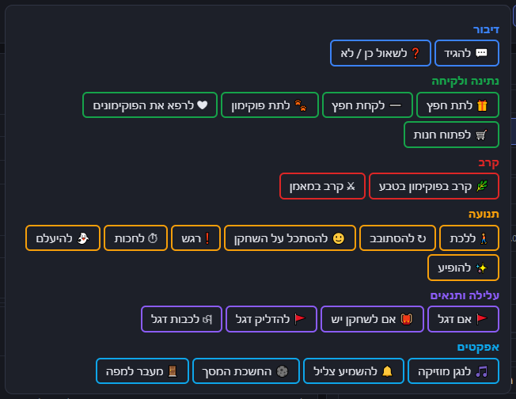
| קבוצה | בלוק | מה הוא עושה |
|---|---|---|
| דיבור | 💬 להגיד | מציג הודעה. Enter בטקסט יורד שורה. |
| ❓ לשאול כן / לא | שואל שאלה. שמים בלוקים שונים תחת כן ותחת לא. | |
| נתינה ולקיחה | 🎁 לתת חפץ | נותן לשחקן חפץ (וכמות). |
| ➖ לקחת חפץ | לוקח חפץ. | |
| 🐾 לתת פוקימון | נותן פוקימון ברמה מסוימת, עם הודעה לבחירה. | |
| ❤ לרפא את הפוקימונים | מרפא את כל הקבוצה, כמו במרכז פוקימונים. | |
| 🛒 לפתוח חנות | פותח חנות עם החפצים שתבחרו. | |
| קרב | 🌿 קרב בפוקימון בטבע | מתחיל קרב בפוקימון בטבע. |
| ⚔ קרב במאמן | קרב במאמן, עם טקסט פתיחה וטקסט הפסד. | |
| תנועה | 🚶 ללכת | מזיז את השחקן או דמות, צעד אחרי צעד, במהירות רגילה, איטית או מהירה. |
| ↻ להסתובב | מסובב מישהו לכיוון מסוים. | |
| 🙂 להסתכל על השחקן | הדמות מסתובבת אל השחקן. | |
| ❗ רגש | מציג ❗, ❓ או ♥ מעל הראש של מישהו. | |
| ⏱ לחכות | מחכה מספר שניות. | |
| 👻 להיעלם / ✨ להופיע | מסתיר או מראה דמות. המשחק זוכר את זה. | |
| עלילה ותנאים | 🚩 אם דגל | מריץ בלוקים שונים לפי דגל. |
| 🎒 אם לשחקן יש | מריץ בלוקים שונים לפי אם יש לשחקן חפץ. | |
| 🚩 להדליק דגל / 🏳 לכבות דגל | זוכר (או שוכח) שמשהו קרה. | |
| אפקטים | 🎵 לנגן מוזיקה | מחליף את המוזיקה. |
| 🔔 להשמיע צליל | משמיע אפקט קולי. | |
| 🌑 החשכת המסך | מחשיך את המסך או מחזיר אותו. | |
| 🚪 מעבר למפה | שולח את השחקן למפה אחרת. |
מה זה דגל? דגל הוא מתג של דולק/כבוי שהמשחק זוכר בקובץ השמירה. למשל "השחקן כבר קיבל את השיקוי מאמא". בזכות דגלים, דמויות אומרות משהו חדש בפעם השנייה שמדברים איתן, וחפצים לא חוזרים. לשונית עלילה מטפלת ברוב הדגלים בשבילכם.
לשדות כמו מי הולך, מי או איפה יש כפתור 👆 (בחירת הדמות במפה, בחירת המקום במפה). לוחצים עליו ואז על המפה. אף פעם לא צריך להקליד קואורדינטות.
בלשונית עלילה, ▶ הפעלת התצוגה המקדימה מציגה אנימציה מהירה של ההליכה וההודעות בסצנה, ישר בעורך. זו סקיצה בלבד, והתוצאה האמיתית נמצאת במשחק. כדי לראות אותה, משתמשים ב-▶ שחק מכאן או בבדיקה מהצעד הזה.
בלשונית 📖 עלילה כותבים את הסיפור של המשחק: מה השחקן צריך לעשות, באיזה סדר, ומה אנשים אומרים בדרך. לא כותבים סקריפטים ודגלים ביד. יוצרים רשימה של צעדים, ו-Ember Studio בונה את כל השאר.
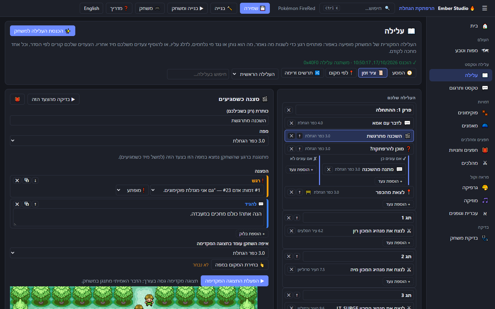
🧭 המסע (הכפתור הראשון מעל העלילה) מציג את כל המשחק על קו אחד, מהעיר הראשונה ועד הליגה. בכל תחנה מופיעים:
למעלה, גרף קטן מראה את רמות המנהיגים לפי הסדר. נקודה אדומה היא מנהיג חלש מזה שלפניו.
לחיצה על צעד פותחת את ההגדרות שלו מימין.
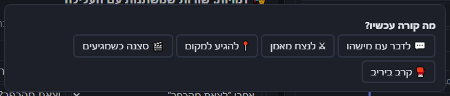
| צעד | מה קורה |
|---|---|
| 💬 לדבר עם מישהו | השחקן מדבר עם דמות, והבלוקים שכתבתם רצים. למשל: "אמא נותנת לכם נעלי ריצה". |
| ⚔ לנצח מאמן | השחקן צריך לנצח מאמן או מנהיג מכון. אפשר להוסיף בלוקים שרצים מיד אחרי הניצחון. |
| 📍 להגיע למקום | משהו קורה כשהשחקן עולה על משבצת. למשל: הפרופסור עוצר אתכם ביציאה מהעיר. |
| 🎬 סצנה כשמגיעים | סצנה שרצה ברגע שהשחקן מגיע למפה, למשל סצנת פתיחה בעיר חדשה. |
| ❓ בחירה (כן / לא) | מישהו שואל שאלה, והעלילה מתפצלת לשני מסלולים. |
| 🥊 קרב ביריב | קרב ביריב, שהקבוצה שלו תלויה בהתחלתי שהשחקן בחר. |
ברוב הצעדים ממלאים:
בכל צעד יש כפתור ▶ בדיקה מהצעד הזה. הוא מפעיל את המשחק ממש לפני הצעד, כששלב העלילה כבר מוגדר. כך רואים בדיוק מה שהשחקן רואה בנקודה הזאת, בלי לשחק את כל המשחק עד אליה.
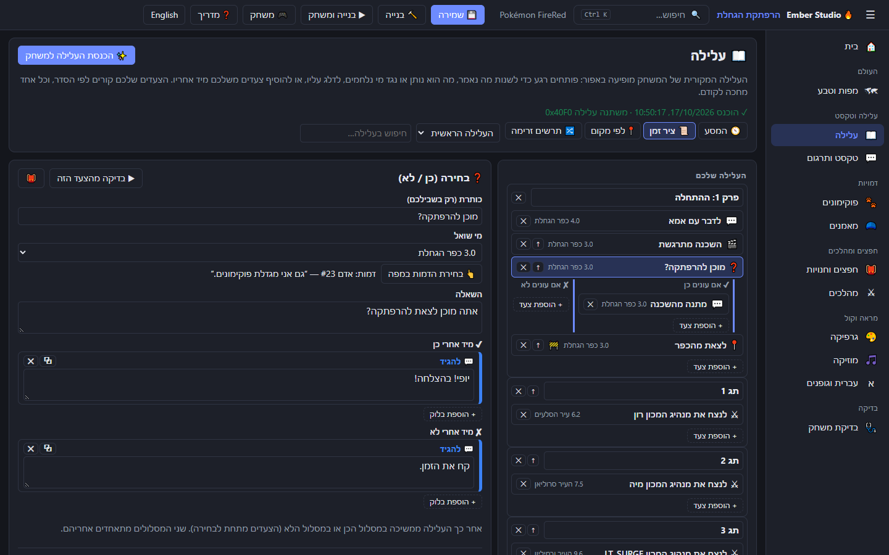
צעד בחירה שואל שאלה של כן/לא. מתחתיו יש שני טורים:
לכל מסלול יכולים להיות צעדים משלו, סצנות משלו ואפילו סוף משלו. אחרי המסלולים העלילה ממשיכה יחד.
הרבה פעמים אסור לשחקן להגיע למקום מסוים עדיין: "אי אפשר לצאת מהעיר בלי פוקימון!". בצעד להגיע למקום או בצעד לדבר אפשר להוסיף שומר: דמות שעומדת בדרך עד שהצעד מסתיים, ואז נעלמת. Ember Studio דואגת להסתיר אותה ברגע הנכון.
תחת דמויות: שורות שמשתנות עם העלילה, דמות יכולה להגיד שורות שונות בנקודות שונות בעלילה. למשל, תושב אומר "שמעתי על פוקימון מוזר…" בהתחלה, ו"ניצחת את מנהיג המכון!" אחרי התג הראשון. מוסיפים שורה ובוחרים אחרי "…": הצעד שאחריו היא מתחילה.
לוחצים על ✨ הכנסת העלילה למשחק. Ember Studio כותבת למשחק את כל הסקריפטים, הטריגרים והסצנות. אפשר לשנות את העלילה ולהכניס אותה שוב בכל זמן: הגרסה הקודמת נמחקת קודם, כך ששום דבר לא נשאר מאחור.
טיפ: עובדים בחלקים קטנים: כותבים צעד או שניים, מכניסים למשחק, ומנסים עם בדיקה מהצעד הזה.
לשונית העלילה מציגה גם את העלילה שכבר נמצאת במשחק: אוק שעוצר אותך ליד הדשא, בחירת הפוקימון הראשון, הקרב ביריב, החבילה, כל מנהיגי המכונים, צוות רוקט, ארבעת הגדולים ועוד. Ember Studio מוצאת אותה בעזרת מעקב אחרי כל הסקריפטים במשחק, ולכן זה עובד גם ב-FireRed וגם בהאקים שמבוססים עליו. לרגעים של FireRed המקורי יש שמות מדויקים. בהאק, מה שעדיין תואם שומר על השם, ומה שחדש מקבל שם לפי מה שהוא עושה.
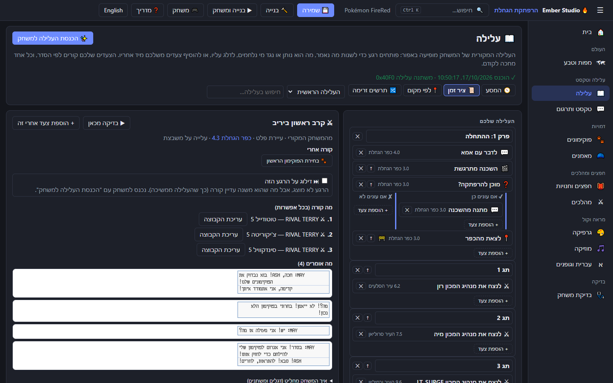
הרגעים של המשחק הם הכרטיסים האפורים תחת העלילה של המשחק, בפרקים לפי מקום: עיירת פלט, ורידיאן, פיוטר וכן הלאה. הצעדים שלכם מופיעים בצבע.
הכפתורים למעלה עוברים בין שלוש תצוגות:
התפריט שלידם עובר בין העלילה הראשית לכל מה שקורה, שמוסיף גם אירועי צד כמו מתנות, חכות דיג ומאמנים של צוות רוקט. תיבת החיפוש מוצאת רגע לפי שם או לפי מקום.
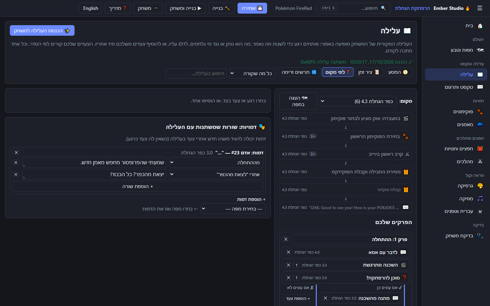
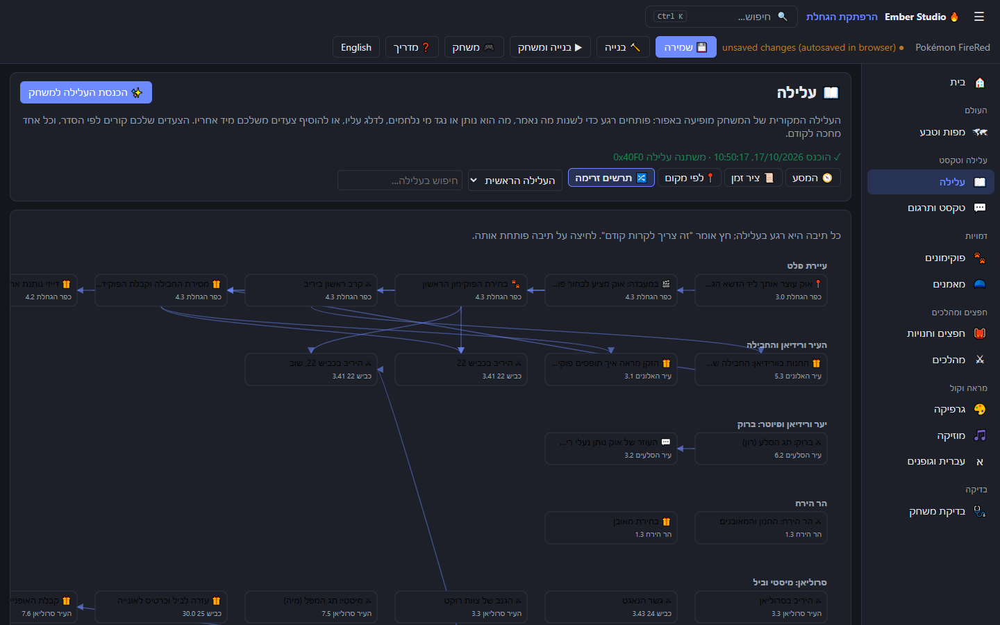
לחיצה על רגע פותחת אותו מימין:
שינויים בשורות, בפוקימונים, בחפצים ובקבוצות נכנסים למשחק מיד, כמו כל עריכה אחרת.
סימון ⏭ דילוג על הרגע הזה מוציא רגע מהעלילה, למשל "אוק עוצר אותך ליד הדשא הגבוה". הרגע כבר לא מוצג, אבל מה שהוא משנה עדיין קורה, כך שהמשך העלילה לא נתקע. המתנות שלו ניתנות בשקט. הדילוג נכנס למשחק בלחיצה על ✨ הכנסת העלילה למשחק, ואפשר לבטל את הסימון בכל זמן.
הכפתור + ליד רגע (או + הוספת צעד אחרי זה) פותח פרק משלכם מיד אחריו. זה מתאים למשל לסצנה חדשה בין בחירת הפוקימון לקרב ביריב:
עכשיו הקרב ביריב לא מתחיל עד שהצעדים שלכם נגמרים. לכל פרק כזה יש משתנה עלילה משלו, כך שפרק אחרי היריב לא מחכה לפרק אחרי ברוק.
טיפ: הביטול מדויק. מבטלים דילוג או מוחקים את הפרק, מכניסים שוב את העלילה למשחק, והסקריפטים של המשחק חוזרים בדיוק כמו שהיו, בייט אחרי בייט.
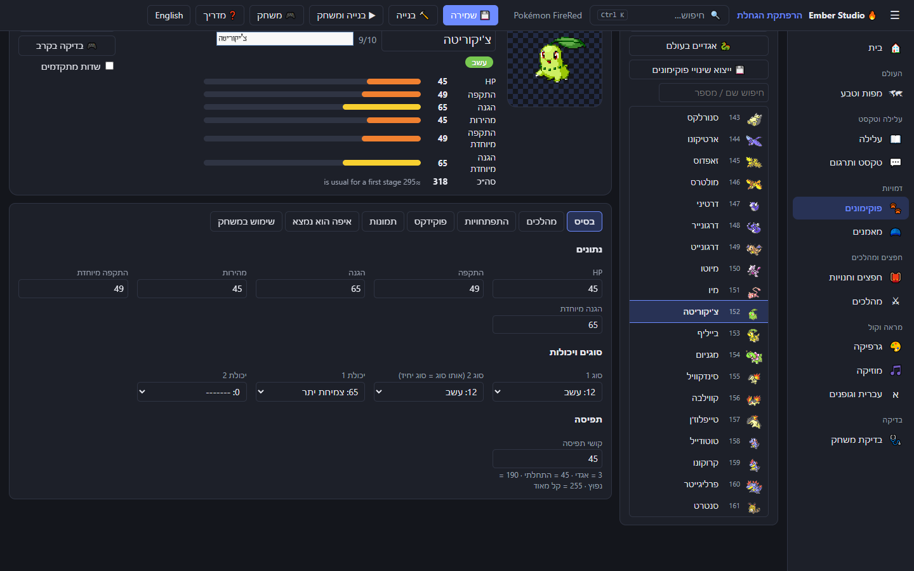
בוחרים פוקימון מהרשימה (אפשר לחפש לפי שם או מספר). אפשר לשנות:
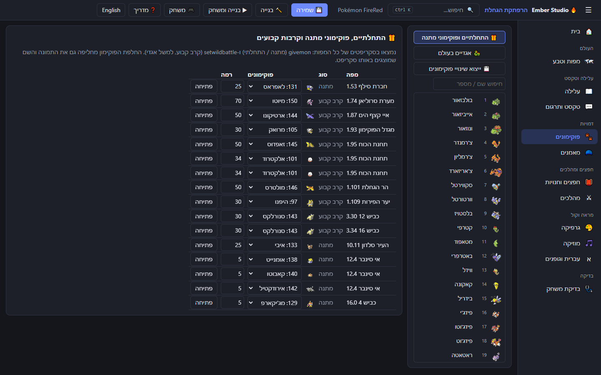
🎁 התחלתיים ופוקימוני מתנה מציג כל מקום במשחק שבו השחקן מקבל פוקימון או פוגש פוקימון קבוע:
משנים את הפוקימון או את הרמה, ו-Ember Studio משנה את הסקריפט ואת התמונה שמוצגת איתו.
🐉 אגדיים בעולם מציג כל פוקימון שעומד במפה ונלחמים בו פעם אחת: מיוטו, הציפורים האגדיות, לוגיה, הו-אוה, דאוקסיס, סנורלקס, האלקטרודים בתחנת הכוח, ואלה שהוספתם. בוחרים אחד כדי לראות את הכרטיס שלו:
➕ אגדי חדש מציב אגדי חדש בכל מפה: בוחרים פוקימון, רמה, מפה ומקום. השחקן מדבר איתו, שומע את הצעקה שלו ונלחם בו. אחרי הקרב הוא נעלם, בין אם נתפס ובין אם לא. אם אין לפוקימון דמות משלו, נוצרת אחת מהתמונה שלו.
💾 ייצוא שינויי פוקימונים שומר את שינויי הפוקימונים בקובץ, שאפשר לשתף או לייבא לפרויקט אחר.
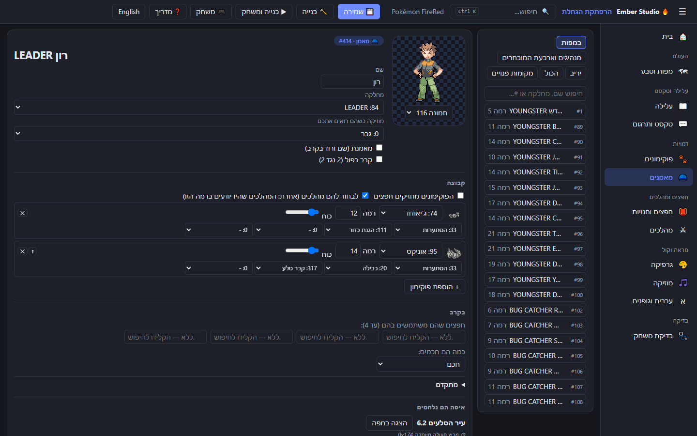
בצד מופיעה רשימת כל המאמנים. אפשר לסנן אותה ולהציג רק מנהיגים ויריבים, לפי מפה או לפי מחלקה. לכל מאמן אפשר לשנות:
הגרף 📈 קושי לאורך העלילה מציג כל מאמן כנקודה: כמה חזק הפוקימון הכי חזק שלו, מתחילת המשחק ועד סופו. מנהיגי מכונים בזהב, יריבים בכחול, ומאמנים שחזקים או חלשים בהרבה מהמאמנים סביבם באדום.
לכל חפץ:
בראש הכרטיס כמה משפטים קצרים מסבירים מה החפץ עושה, למשל מרפא 20 HP או סיכוי התפיסה ×2. מתחתם יש שדות למה שאפשר לשנות:
המספרים הגולמיים עדיין נמצאים תחת מתקדם.
פותחים את איך הוא נראה (אייקון) כדי לצייר את האייקון בגודל 24×24:
➕ חפץ חדש… בראש הרשימה יוצר חפץ חדש באחד המקומות הפנויים של המשחק (אלה שנקראים ????????). בוחרים למה הוא דומה: מרפא HP (כמו שיקוי), מרפא סטטוס, מחייה, מחזיר PP, מעלה נתון לתמיד, מעלה נתון בקרב, אבן התפתחות, חפץ להחזקה, ספריי או משהו למכירה. החפץ החדש מקבל את ההתנהגות, ההשפעה והאייקון של אותו חפץ. אחר כך נותנים לו שם, אייקון ותיאור, ומכניסים אותו לחנות או למפה.
אי אפשר ליצור כדורים חדשים או פירות חדשים, כי המשחק מזהה אותם לפי המספר שלהם.
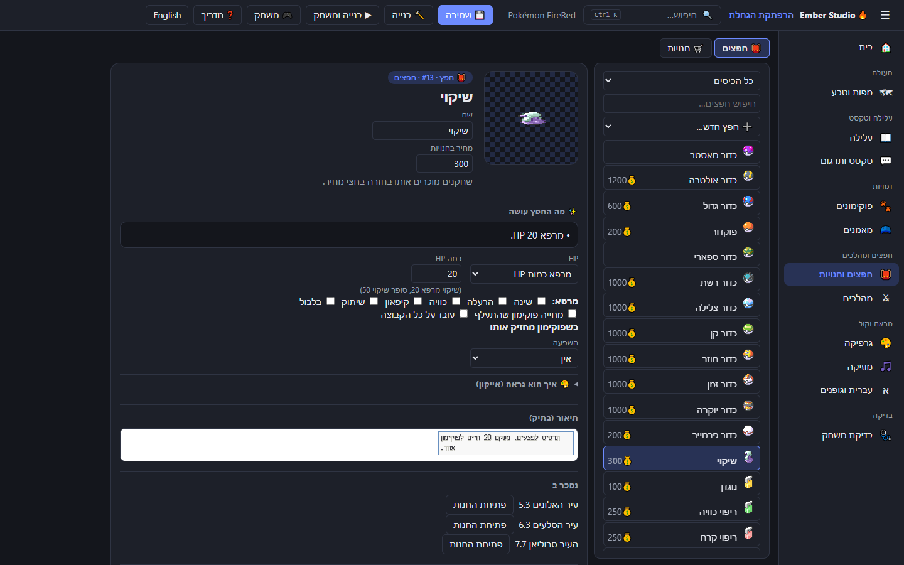
התצוגה חנויות מציגה את כל החנויות במשחק: כל דלפק של פוקה-מרט וכל חנות מיוחדת. בוחרים חנות כדי לשנות מה היא מוכרת, להוסיף או להסיר חפצים, ולשנות את הסדר.
אפשר גם ליצור חנות חדשה בכל מקום, עם הבלוק 🛒 לפתוח חנות.
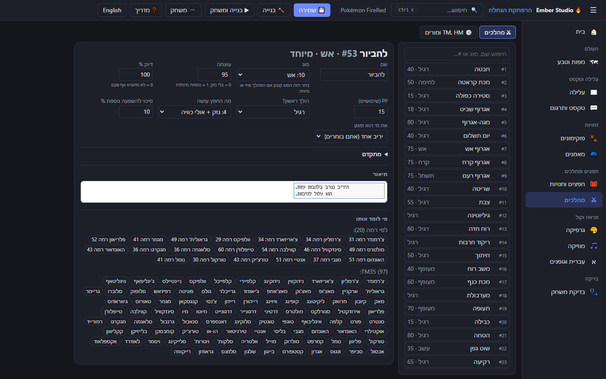
לכל מהלך:
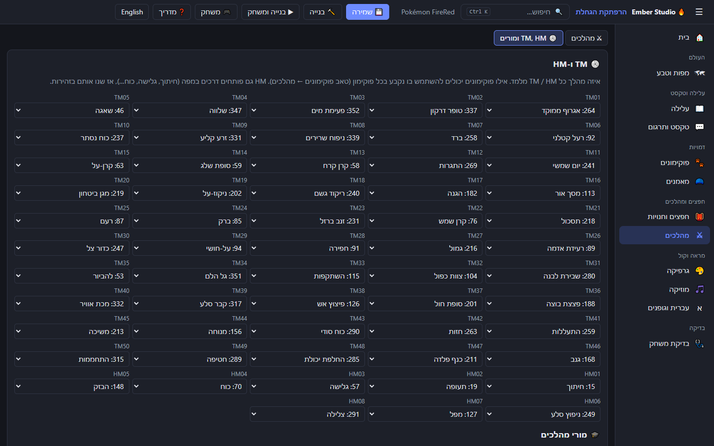
אילו פוקימונים יכולים ללמוד כל TM קובעים בלשונית פוקימונים.
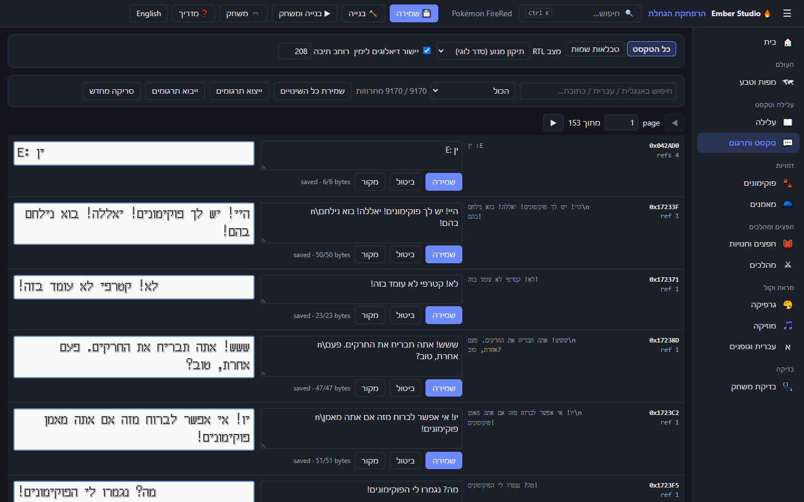
הלשונית טקסט ותרגום מציגה כל טקסט במשחק, יותר מ-9,000 מחרוזות: דיאלוגים, שלטים, תפריטים ושמות.
Ember Studio מגיעה עם תרגום מלא של FireRed לעברית (יותר מ-7,000 שורות). אין בו את הטקסט האנגלי המקורי, שהוא של נינטנדו. לכל שורה נשמרת רק "טביעת אצבע" קצרה (hash) של השורה באנגלית, ו-Ember Studio משווה אותה לטקסט שב-ROM שלכם. שורה שלא מתאימה ל-ROM שלכם מדולגת.
שורה רחבה מדי לתיבת ההודעות מסומנת באדום. מפצלים אותה לשורה חדשה או מקצרים. גם בדיקת המשחק מוצאת שורות כאלה.
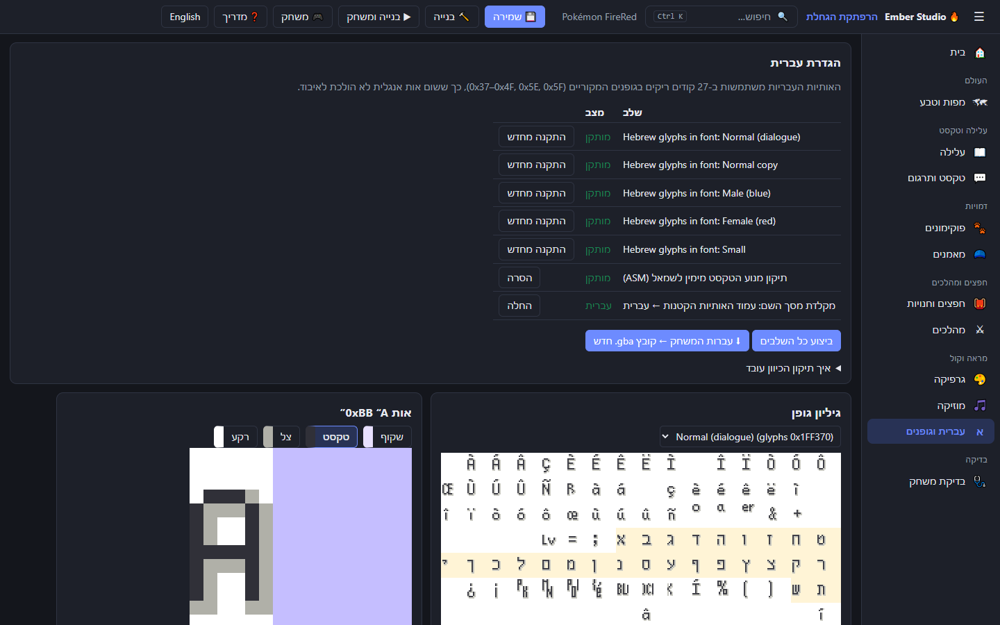
כששפת המשחק היא עברית, Ember Studio:
גיליון הגופן מציג את כל האותיות. אפשר לצייר מחדש כל אות, פיקסל אחרי פיקסל, למשל כדי שהאותיות העבריות יתאימו לסגנון שלכם.
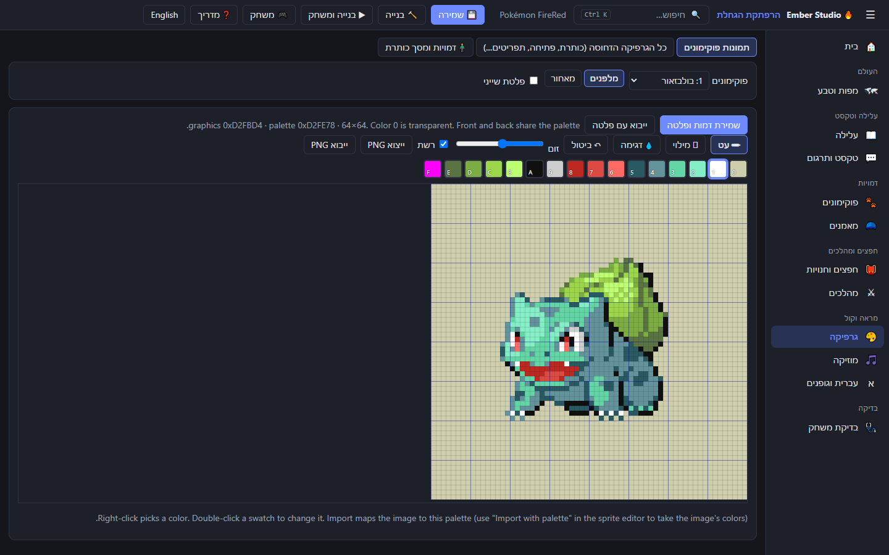
ללשונית גרפיקה יש שלושה חלקים:
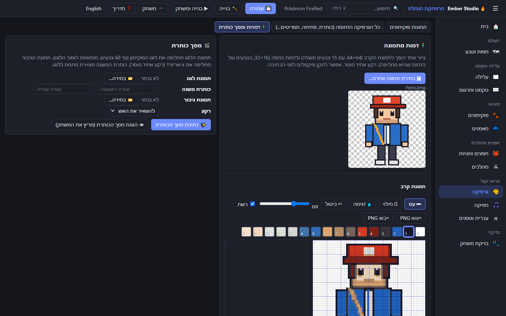
אפשר ליצור דמות חדשה, למשל גיבור חדש, מתמונה אחת:
תחת 🎬 מסך כותרת:
לוחצים על ✨ כתיבת מסך הכותרת. 👁 הצגת מסך הכותרת (מריץ את המשחק) מריץ את המשחק ברקע ומראה את התוצאה.
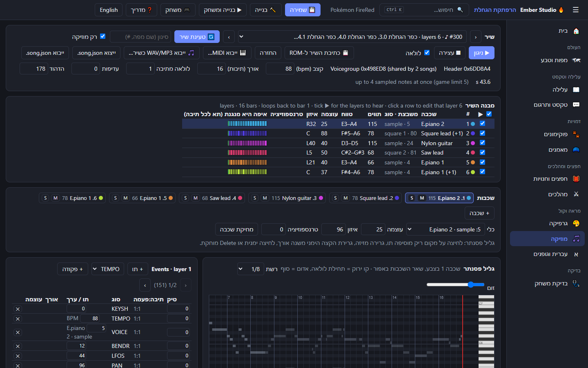
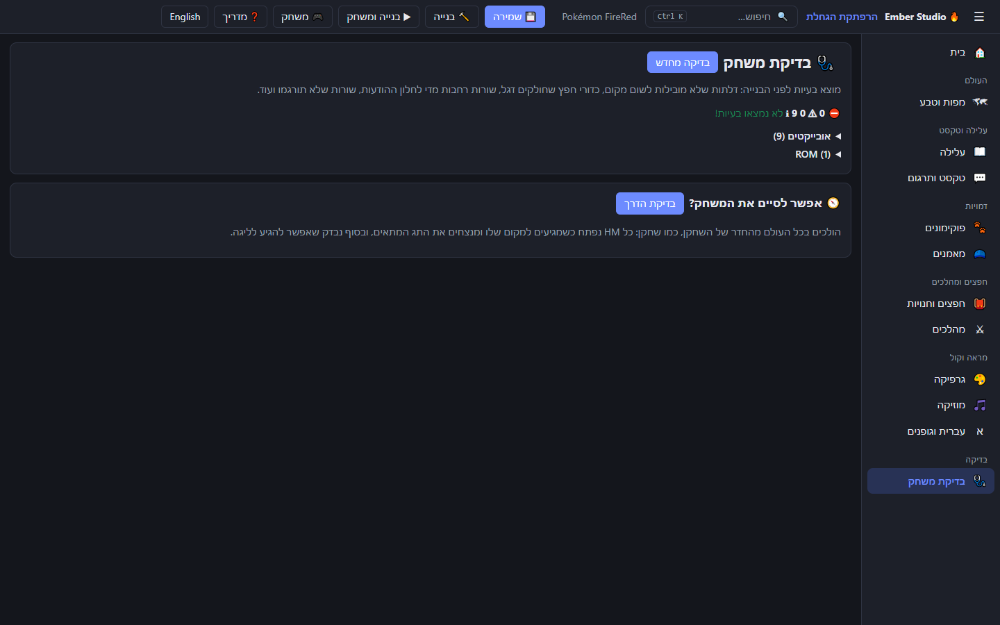
לפני ששולחים את המשחק, פותחים את 🩺 בדיקת משחק. היא עוברת על כל המשחק ומציגה בעיות לפי קטגוריה:
| בעיה | למה זה חשוב |
|---|---|
| מפה שאי אפשר לטעון | המשחק יקרוס שם. |
| דלת שמובילה למפה שלא קיימת, או למספר דלת שאין במפה | השחקן נתקע או שהמשחק קורס. |
| אובייקט מחוץ למפה | לפעמים בכוונה (דמות שנכנסת בזמן סצנה), ולכן זו רק הערה. |
| כדור חפץ בלי דגל, או שני כדורים עם אותו דגל | החפץ חוזר כל פעם, או שאיסוף אחד מעלים את השני. |
| אותו מאמן בשימוש פעמיים | ניצחון על אחד נחשב לשניהם. |
| שורה רחבה מדי לתיבת ההודעות | הטקסט נחתך. |
| שורה שעדיין באנגלית (במשחק בעברית) | משהו נשאר בלי תרגום. |
| מנהיג מכון חלש מהמנהיג שלפניו | הקושי הולך אחורה. |
| כמעט לא נשאר מקום פנוי ב-ROM | סקריפטים ותמונות חדשים אולי לא ייכנסו. |
לכל בעיה יש כפתור הצגה שמעביר אתכם למקום הנכון. אחרי התיקונים לוחצים על בדיקה מחדש.
מתחת לרשימה, בדיקת הדרך הולכת בכל העולם מהחדר של השחקן, כמו ששחקן יכול, ואומרת אם אפשר להגיע לליגה:

ב-Ember Studio מובנה האמולטור mGBA, והוא נפתח בחלון בתוך העורך.
| כפתור | איפה המשחק מתחיל |
|---|---|
| 🎮 משחק | מההתחלה, כמו שהמשחק עכשיו. |
| ▶ בנייה ומשחק | בונה את out/game.gba ואז משחק בו מההתחלה. |
| ▶ שחק מכאן (עורך מפה או תצוגת עולם) | במקום שלוחצים עליו, עם קבוצת בדיקה. |
| ▶ בדיקה מהצעד הזה (עלילה) | ממש לפני הצעד הזה בעלילה, כששלב העלילה מוגדר. |
| מקלדת | GBA |
|---|---|
| חיצים | כפתורי הכיוון |
| X | A |
| Z | B |
| Enter | Start |
| Backspace | Select |
| A / S | L / R |
קודם לוחצים על תמונת המשחק, כדי שהיא תקבל את המקשים.
▶ שחק מכאן ובדיקה מהצעד הזה נותנים לשחקן קבוצת בדיקה, כדי שאפשר יהיה להילחם מיד. משנים אותה בכפתור 🎒: בוחרים פוקימונים ורמות.
טיפ: הבדיקה משנה רק עותק של המשחק בזיכרון. הפרויקט שלכם לא משתנה.
המשחק שלי/
project.json שם, שפה, ה-ROM הבסיסי, שלבי בנייה
rom/patch.bin השינויים שלכם ל-ROM (קטן)
data/*.json העלילה, הסקריפטים, קבוצת הבדיקה, שינויי פוקימונים, הזזות מפות (קריא)
out/game.gba המשחק הבנוי (לא נשמר ב-Git)
README.md, .gitignore
out/ קטן וקריא, ולכן מתאים מאוד ל-Git: רואים מה השתנה, ואפשר לחזור לכל גרסה.cd "My Game"
git init
git add .
git commit -m "First version"
קובץ ה-.gitignore ש-Ember Studio יוצרת כבר משאיר בחוץ את out/ ואת קובצי השמירה. אפשר להעלות את הפרויקט ל-GitHub ולעבוד עליו עם חברים. כל אחד צריך ROM משלו.
אסור לשתף את ה-ROM עצמו (out/game.gba), כי הוא מכיל את המשחק של נינטנדו. במקום זה משתפים אחד מאלה:
out/game.gba בכלי חינמי כמו Floating IPS (Flips), והשחקנים מחילים אותו על ה-ROM שלהם באותו כלי. (כשעורכים קובץ ROM ישירות, בלי פרויקט, הכפתור קובץ IPS בסרגל העליון יוצר את הטלאי בשבילכם.)📥 הפיכת ROM לפרויקט לוקח האק או תרגום גמורים ויוצר מהם פרויקט:
.gba.rom/patch.bin.מכאן עובדים עליו כמו על כל פרויקט אחר.
פרויקט יכול להריץ שלבי בנייה משלו: סקריפטים של Python שרצים בזמן הבנייה ומשנים את המשחק עוד. משחק הדוגמה כחול-לבן משתמש בשלב כזה למסך הכותרת ולגרפיקה. השלבים רשומים ב-project.json. Ember Studio מריצה אותם רק כשהקבצים שלהם משתנים, כך שהבנייה נשארת מהירה.
Windows אומרת שהיישום לא מוכר. לוחצים מידע נוסף ← הפעל בכל זאת. ראו התקנה.
"זה לא FireRed (US) v1.1". Ember Studio עובדת רק עם הגרסה הזאת: קוד משחק BPRE, גרסה 1. בגרסאות אחרות (v1.0, אירופית, יפנית) הנתונים נמצאים במקומות אחרים.
חלון האמולטור נשאר שחור. מחכים כמה שניות: בהפעלה הראשונה האמולטור מועתק. אם הוא נשאר שחור, סוגרים את החלון ב-✕ ולוחצים שוב על משחק.
▶ שחק מכאן לא עושה כלום. בתצוגת עולם קודם לוחצים על מפה כדי לבחור אותה. הכפתור אפור עד שבוחרים מפה.
שיניתי את העלילה, ושום דבר לא השתנה במשחק. אחרי שינוי צעדים לוחצים על ✨ הכנסת העלילה למשחק, ואז בודקים שוב.
המשחק קורס כשנכנסים לדלת. מריצים 🩺 בדיקת משחק. היא מוצאת דלתות שלא מובילות לשום מקום.
הטקסט נחתך. השורה רחבה מדי. מפצלים אותה לשתי שורות. לשונית הטקסט מסמנת שורות רחבות מדי באדום.
אני רוצה לבטל הכול.
אם אתם עובדים עם Git, חוזרים ל-commit ישן. אם לא, הקובץ rom/patch.bin שבפרויקט הוא העבודה שלכם: כדאי לשמור מדי פעם עותקים של התיקייה.
איפה ההגדרות שלי?
ב-%LOCALAPPDATA%\EmberStudio. מחיקת התיקייה הזאת מאפסת את Ember Studio. הפרויקטים לא נמצאים שם, אז הם בטוחים.
המדריך נוצר מתוך התוכנה עצמה: כל התמונות צולמו אוטומטית מ-Ember Studio. תיקונים ותרגומים יתקבלו בשמחה ב-GitHub.